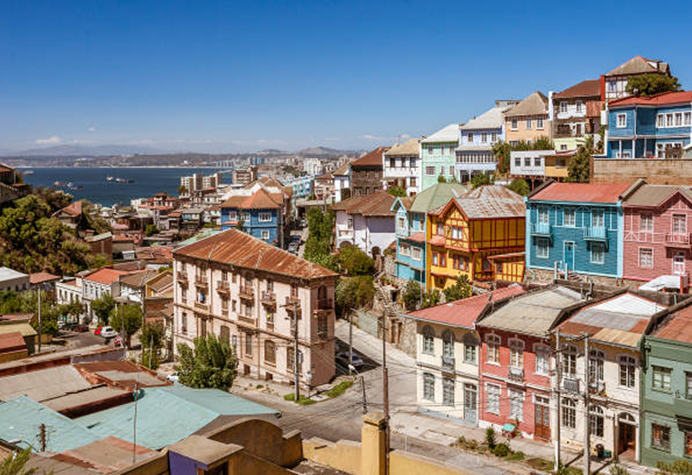

INFORMAÇÕES
Valparaíso é uma comuna da província de Valparaíso, localizada na região de Valparaíso, no Chile. Possui uma área de 401,6 km², o que representa 2,17% da área de sua província, e uma população de 294 848 habitantes (2012), sendo a terceira cidade mais populosa do Chile, atrás de Santiago e Concepción. A Grande Valparaíso possui 930 220 habitantes.
